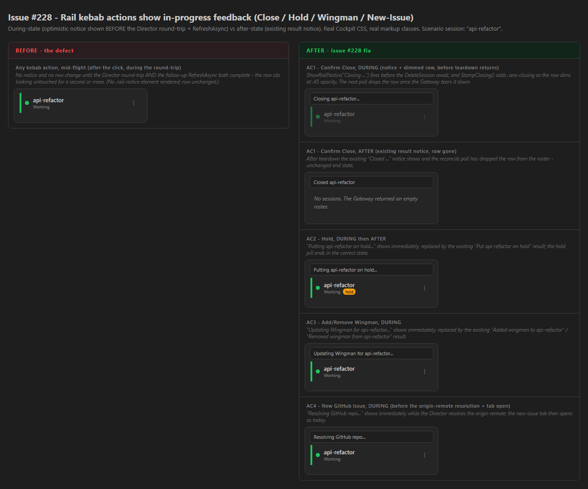

Developer Agent proof report · branch issue-228-rail-action-feedback · CenCon Development Method
The four rail kebab actions in Cockpit.razor → OnRailMenuAction closed the menu
instantly but then gave no feedback until both the Director round-trip and the follow-up
RefreshAsync completed. This change shows the existing ShowRailNotice line
optimistically before the awaits, then lets the existing result notice replace it -
the same optimistic-UI pattern as the #217 explain-button fix (commit 137b289). For Close it also
dims the row optimistically, reconciled by the next poll.
| File | Change |
|---|---|
src/CcDirector.Cockpit/Components/Pages/Cockpit.razor |
OnRailMenuAction: in-progress ShowRailNotice(...) +
InvokeAsync(StateHasChanged) before the await for github-issue,
hold, wingman, close. New _closingSids
dictionary + StampClosing / ClosingSessionIds for the optimistic
Close-row dim; reconciled in RefreshAsync (sid drops when its session leaves the
roster, 15s stale-cap); un-stamped on a close failure in the catch block. |
src/CcDirector.Cockpit/Components/SessionRail.razor |
New ClosingSessionIds parameter; rows in that set get the
sess-closing class. |
src/CcDirector.Cockpit/wwwroot/app.css |
New .sess-closing rule (opacity:.45;pointer-events:none),
using existing Cockpit tokens - no hard-coded colors added. |
| # | Criterion | How the code satisfies it | Result |
|---|---|---|---|
| 1 | Close shows Closing <title>... + dimmed row in the same render,
then Closed <title> and the row is gone. |
StampClosing + ShowRailNotice("Closing ...") +
StateHasChanged run before DeleteSessionAsync; row gets
sess-closing (.45 opacity); poll reconcile removes the sid when the session
leaves the roster; existing Closed notice unchanged. | PASS |
| 2 | Hold/un-hold shows Putting/Taking ... hold... immediately, then the
existing result; pill ends correct. |
In-progress notice + StateHasChanged before SetHoldAsync; existing
result notice + RefreshAsync unchanged. | PASS |
| 3 | Wingman shows Updating Wingman for ... immediately, then the existing
result. |
In-progress notice + StateHasChanged before
SetWingmanEnabledAsync. | PASS |
| 4 | New GitHub Issue shows Resolving GitHub repo... immediately, then
opens the issue tab as today. |
In-progress notice + StateHasChanged before
GetGitHubNewIssueUrlAsync + window.open. | PASS |
| 5 | No regression: every action's end state matches today's after the reconcile poll. | All Director calls, existing result notices and RefreshAsync are unchanged;
only optimistic feedback was added ahead of them. Close-dim clears on poll or 15s
stale-cap. | PASS |
The Cockpit is served by the user's live Gateway, so driving real Close/Hold against the user's
running fleet was not safe (CLAUDE.md rule 0). Following the established Cockpit-rail proof pattern
(sibling issue #227), the during/after states are rendered with the real
app.css (copied at build time) and the same markup classes
SessionRail.razor emits (.rail-notice, .sess,
.sess-closing, .tag-hold). The build was verified clean and the slot-5 test
Director launched via the cc-director-launch scheduled task and registered with the
Gateway (then cleaned up).
states.html screenshotted via Playwright:

Closing api-refactor... notice + the row dimmed
to .45 opacity (the new .sess-closing).Closed api-refactor notice; row gone
after the reconcile poll.Putting api-refactor on hold... notice; hold pill in the
after state.Updating Wingman for api-refactor... notice.Resolving GitHub repo... notice.dotnet build cc-director.sln → Build succeeded. 0 Warning(s) 0 Error(s)scripts\local-build-avalonia.ps1 -Slot 5 → Build succeeded. 0 Warning(s) 0 Error(s); launched via cc-director-launch, registered with the Gateway, then the slot-5 process was stopped (only cc-director5.exe killed).No drift. UI-only optimistic feedback in the CcDirector.Cockpit container; no
architecture change and no security-posture change. No docs/cencon/ file needs updating;
no DT-rule in security_profile.yaml is touched.